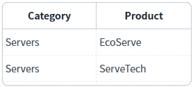
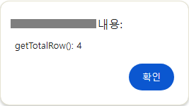
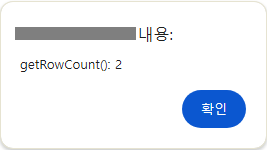

DataList의 'getTotalRow' 메소드와 'getRowCount' 메소드를 사용하여 행의 수를 반환받는 예제입니다.
이 예제에서 사용한 메소드는 다음과 같습니다.
getTotalRow: 원래의 데이터를 기준으로 반환합니다.
getRowCount: 화면에 보여지는 데이터를 기준으로 반환합니다.(필터에 의해 제외된 데이터와 GridView의 drilldown이 적용되어 접혀진 데이터는 포함되지 않습니다.)
DataList의 전체 로우 수 반환받기
필터가 적용된 DataList의 로우 수 반환받기
1
STEP 1: 초기 상태를 확인합니다.
다음은 DataList에 할당된 데이터입니다.
Example 1.DataList에 할당된 JSON 형식의 데이터
[
{ "category": "Networking", "product": "SpeedLink" },
{ "category": "Servers", "product": "EcoServe" },
{ "category": "Networking", "product": "LinkSecure" },
{ "category": "Servers", "product": "ServeTech" }
]화면 로딩 후 DataList의 'category' 컬럼의 값이 'Servers'와 일치하는 데이터만 출력되도록 필터가 적용되었습니다. 필터가 적용된 데이터가 GridView에 구성되어 있습니다.
DataList의 데이터 총 건수는 4건이며, 필터가 적용되어 GridView에 표시된 데이터는 2건입니다.
Image 1.브라우저(Chrome) 실행 예시 - 필터가 적용된 DataList와 연결된 GridView

2
STEP 2: 'DataList의 전체 로우 수 반환받기' 버튼을 클릭합니다.
3
STEP 3: 실행 결과를 확인합니다.
DataList의 전체 로우 수가 alert으로 표시됩니다.
Example 2.alert message
getTotalRow(): 4
Image 2.브라우저(Chrome) 실행 예시

1
STEP 1: 초기 상태를 확인합니다.
다음은 DataList에 할당된 데이터입니다.
Example 3.DataList에 할당된 JSON 형식의 데이터
[
{ "category": "Networking", "product": "SpeedLink" },
{ "category": "Servers", "product": "EcoServe" },
{ "category": "Networking", "product": "LinkSecure" },
{ "category": "Servers", "product": "ServeTech" }
]화면 로딩 후 DataList의 'category' 컬럼의 값이 'Servers'와 일치하는 데이터만 출력되도록 필터가 적용되었습니다. 필터가 적용된 데이터가 GridView에 구성되어 있습니다.
DataList의 데이터 총 건수는 4건이며, 필터가 적용되어 GridView에 표시된 데이터는 2건입니다.
Image 3.브라우저(Chrome) 실행 예시 - 필터가 적용된 DataList와 연결된 GridView
2
STEP 2: '필터가 적용된 DataList의 로우 수 반환받기' 버튼을 클릭합니다.
3
STEP 3: 실행 결과를 확인합니다.
필터가 적용된 DataList의 로우 수가 alert으로 표시됩니다.
Example 4.alert message
getRowCount(): 2
Image 4.브라우저(Chrome) 실행 예시

DataList의 'getTotalRow' 메소드를 사용하여 스크립트를 작성합니다.
Example 5.Script
// 예제 파일에서는 스크립트 'scwin.btn_exam1_1_onclick'에 작성되어 있습니다. // DataList 'dlt_exam'의 전체 로우 수를 반환받습니다. var result = dlt_exam.getTotalRow();
DataList의 'getRowCount' 메소드를 사용하여 스크립트를 작성합니다.
Example 6.Script
// 예제 파일에서는 스크립트 'scwin.btn_exam2_1_onclick'에 작성되어 있습니다. // DataList 'dlt_exam'에 필터가 적용된 로우 수 반환받기 // 화면에 보여지는 데이터를 기준으로 반환합니다.(필터에 의해 제외된 데이터와 GridView의 drilldown이 적용되어 접혀진 데이터는 포함되지 않습니다.) var result = dlt_exam.getRowCount();
getTotalRow( )
getRowCount( )